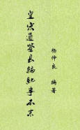

| 史书史籍 > |
| 皇宋通鉴长编纪事本末 |
| [宋]杨仲良 编撰 |
|
皇宋通鉴长编纪事本末，简称《长编纪事本末》，150卷，南宋杨仲良编撰。依据李焘《续资治通鉴长编》，分门别类，以北宋九朝，各为事目，一部分事目更分子目，取李焘原文，首尾连贯，依年月顺序，采缀成篇，但亦间有删节。杨仲良，字明叔，南宋眉州人，生卒年不详。 现存《皇宋通鉴长编纪事本末》残缺颇多，缺6-7卷、114-119卷，第5、8卷只存半卷。 今按人事整理，得349题，标题有修改，其中《吕夷简事迹》有8事，《夏竦事迹》有3事，另数题有上下篇。 （2020-12-2，整理） |
 |